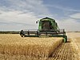

harvested

Definition: Harvesting is the process of collecting plants, animals, or fish (as well as fungi) as food, especially the process of gathering mature crops, and "the harvest" also refers to the collected crops. Reaping is the cutting of grain or pulses for harvest, typically using a scythe, sickle, or reaper. On smaller farms with minimal mechanization, harvesting is the most labor-intensive activity of the growing season. On large mechanized farms, harvesting uses farm machinery, such as the combine harvester. Automation has increased the efficiency of both the seeding and harvesting processes. Specialized harvesting equipment, using conveyor belts for gentle gripping and mass transport, replaces the manual task of removing each seedling by hand. The term "harvesting" in general usage may include immediate postharvest handling, including cleaning, sorting, packing, and cooling.
Source: Wikipedia
Wikipedia Page (Something wrong with this association? Let us know.)
Wikidata Page (Something wrong with this association? Let us know.)
Occurs in: